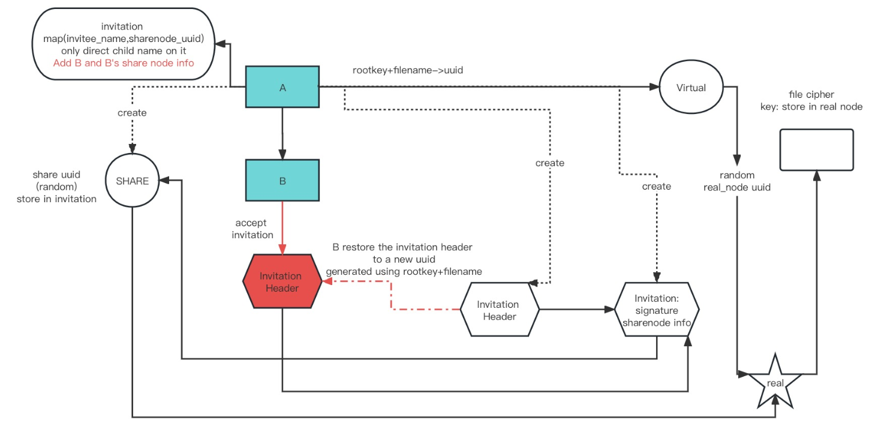
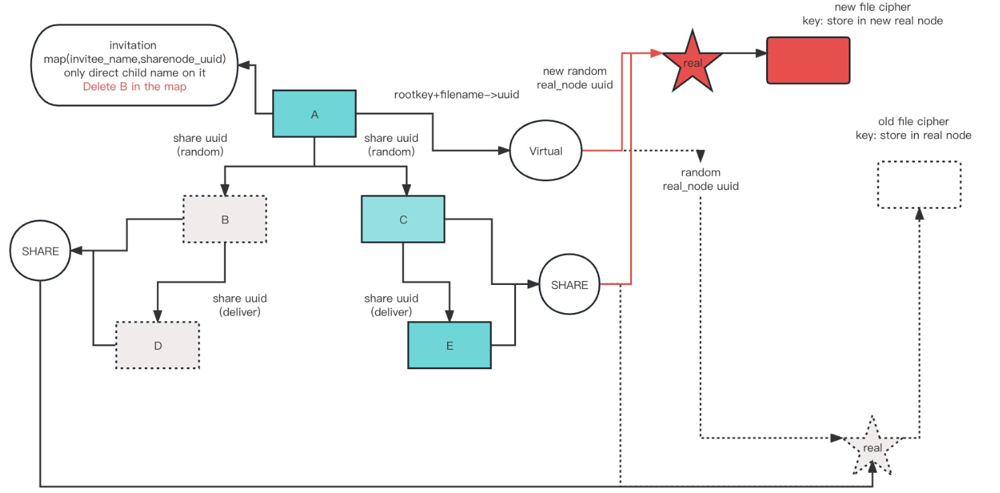

CS161 Final Project Design Document
Abstraction
I designed and implemented a secure file sharing client application in Golang. The application utilizes cryptographic primitives and interacts with the Keystore and Datastore servers. Users can authenticate, save, load, overwrite, and append files securely. Additionally, the app supports file sharing and access revocation.
Data Structure

xtype User struct {Username string//random generate for key distributionRootkey []bytePKEEncKey userlib.PublicKeyTypePKEDecKey userlib.PrivateKeyTypeDSSignKey userlib.PrivateKeyTypeDSVerifyKey userlib.PublicKeyType
// input the username string output the share_node_uuidShareNode_uuid_Map map[string]uuid.UUID // input the username string output the share_node_mac_uuidShareNode_mac_uuid_Map map[string]uuid.UUID //input the username string output the EncKey for the share_node_uuidShareNode_EncKeyMap map[string][]byte//input ......................... the MacKey .......................ShareNode_MacKeyMap map[string][]byte User structure contains rootkey, public key pair, signature key pair and sharenode infomation.
xxxxxxxxxxtype VirtualNode struct { RealNode_uuid uuid.UUID RealNode_mac_uuid uuid.UUID RealNode_EncKey []byte RealNode_MacKey []byte}Virtual Node is the intermediate node used to find real node belonging to the file creator. Its uuid is calculated from root key+file name. Its enc/mac key is distributed using HashKDF
xxxxxxxxxxtype RealNode struct { //store different independent encripted file chunk uuid Cipher_uuid_list []uuid.UUID //store different independent file chunk mac uuid Mac_uuid_list []uuid.UUID
FileEncKey []byte FileMacKey []byte}Real Node is the node used to get to the file. Its uuid and enc/mac key is randomly generated and store in Virtual/ShareNode. It contains two list for recording uuid of all file chunk
xxxxxxxxxxtype ShareNode struct { RealNode_uuid uuid.UUID RealNode_mac_uuid uuid.UUID RealNode_EncKey []byte RealNode_MacKey []byte}Share Node is the intermediate node used to find real node belonging to the file invitee. When creating invitation Its uuid and enc/mac key is randomly generated and store in Invitation Struct. When accepting invitation the invitee will restore the invitation header sended by the user into another uuid generated from accepter's root key and filename. User can access the sharenode through Invitation Struct.
xxxxxxxxxxtype InvitationHeader struct { Invitation_uuid uuid.UUID Invitation_EncKey []byte}Invitation Header struct is the intermediate struct used to get the invitation. Since invitation contains a signature that is too big for public key encryption, a intermediate header is used here to be public key encrypted and sended to the invitee. When invitee accept the invitation, it will restore the invitation header to a new uuid generated from accepter's rootkey+filename. The accepter then can access the invitation header on the fly in the future to find the share node of the shared file.
xxxxxxxxxxtype Invitation struct { SenderHashName []byte FileName string ShareNode_uuid uuid.UUID ShareNode_mac_uuid uuid.UUID ShareNode_EncKey []byte ShareNode_MacKey []byte Sign []byte}Invitation struct is the struct contains sharenode infomation and file creator signature. Invitee can get the sharenode info from this struct and store it into its user structure.
User Authentification
InitUser:
Check whether there is an empty user name, if yes return error
Check whether public key of the user already exists in the keystore. If yes than there is a repeated username error
Generate password uuid from hash(username) and store hash(password) into datastore for future User Authentification
Generate root key for the user for future key distribute
Generate key for public encryption, digital signature and store it into user structure. Store PKEEncKey and DSVerifyKey into Data store
Initialize the map of the user structure
Generate User Structure uuid from hash(username + password + "User Cipher uuid"), distribute user structure encrpt key from password
Encrpt the user structure and store it into the datastore
Generate User Structure mac uuid from hash(username + password + "User Mac uuid"), distribute user structure mac key from password
Generate mac on the user structure cipher and store it into the datastore
return the pointer to the user structure and the error infomation
GetUser:
Get password uuid from the user name and password the user provided. If uuid generate fail return err
Get hash(password) store in the password uuid. Compare the hash of the password that is provided by user and password in datastore. If not equal then return wrong password err
If the password is correct, then client will generate encryption key, mac key and user struct uuid from username and password.
Client check the mac to make sure integrity is provided and decrypt the user structure
Return the pointer to the decrpted user structure and err infomation
File Storage and Retrieval
StoreFile:
Get the virtual node of the file using the file name. If no virtual node is found, that means the user who wants to access the file is an invitee
Creator store file
Get the real node of the file using the filename. If no real node is found, that means the creator wants to store a new file. Else, that means the creator wants to update the file
Overwrite exist file
Delete the file cipher and mac using the infomation from real node
Update the Cipher_uuid_list and Mac_uuid_list stored in real node
Encrpt and mac the new content using keys stored in real node
Update the Cipher_uuid_list and Mac_uuid_list stored in real node
Store the new file cipher and mac into the datastore.
Get the Real node encrypt key and mac key from virtual node
Use the key to encrypt and mac the new real node. Store it into the datastore
Store new file
Generate virtual node uuid using hash(string(userdata.Rootkey) + filename). Generate mac key in a similar way
Generate enc/mac key for storing virtual node. They generated using HashKDF on the root key
Initialize and store the virtual node (The real node uuid and enc/mac key is randomly generated and stored in virtual node)
Initialize the real node and randomly generated the file enc/mac key
Encript and mac the content, random generated the cipher uuid and mac uuid, store the content and mac into the datastore
Encript and mac the real node and store it into the datastore
Invitee store file
Get the sharenode of the file using the filename. Using the info in sharenode to get the file real node
Delete the file cipher and mac using the infomation from real node
Update the Cipher_uuid_list and Mac_uuid_list stored in real node
Encrpt and mac the new content using keys stored in real node
Update the Cipher_uuid_list and Mac_uuid_list stored in real node
Store the new file cipher and mac into the datastore.
Get the Real node encrypt key and mac key from share node
Use the key to encrypt and mac the new real node. Store it into the datastore
AppendToFile:
Creator get the real node through virtual node, invitee get real node through share node
User encrypt/mac the new content with keys stored in real node
Random generate new uuid for appended content and its mac. Store it to real node list
Store appended content cipher and its mac into datastore
Restore the real node
LoadFile:
Get the real node from the filename
For every uuid in real_node.Cipher_uuid_list, decrypt the content out and append it to previous decrypt content.
xxxxxxxxxx(Remember to check the mac for every chunk before decrypt)
Return the file content
File Sharing and Revocation
xxxxxxxxxxShare Logic Bic Picture

xxxxxxxxxxCreate Invitation and accept invitation (A invite B)
CreateInvitation:
Check whether the the user can get the virtual node. If not,that means the user is an invitee.
Creator create invitation
Initialize invitation and invitation header
Create a new share node for the invitee, update the share node map inside creator's user struct
Enc/Mac the invitation, public encrypt invitation header, store them into the datastore
Enc/Mac share node and store it into the datastore
The invitation head uuid is then sended to invitee
xxxxxxxxxxInvitee create invitation- Invitee get the invitation of the file using the filename (on the fly)- Using the info inside invitation to create new invitation header and invitation that points to the same sharenode- Enc/Mac invitation and invitation header and store them into the datastore in the same way creator does- The invitation head uuid is then sended to invitee
AcceptInvitation:
Secret key decript the invitation header sended by the invitor, get the invitation through the invitation header
Verify the signiture of the invitation
Generate the invitation header uuid from root key and file name
Restore the invitation header to the generated uuid for future access

xxxxxxxxxxA revokes B's access
RevokeAccess
Check whether the user can get the real node. If not then the user isn't the creator, return err
Check whether the revoke recipient is in the share node map. If not then this is an illegal revoke, return err
Creator load the file
Creator delete the old file cipher and mac inside datastore using info from real node.
Creator delete the old real node
Creator random generate the new real node uuid, enc/mac key, file uuid and file enc/mac key
Re-encrypt/mac and store the file and new real node into the new uuid
Update the info in virtual node
Delete the revoke recipient's info in the sharenode map inside creator user struct
Update the sharenode of all the remaining sharenode
Delete the revoke recipient's share node
Efficient Append

Every time a user append to a file, seperately encrypt the file chunk and store it to a random generated uuid. Store the file chunk uuid info into the real node struct's list for future access. When loading the file, it uses the real node's list to get to every file chunk, decrypt it and concatenate it together to get the whole file content.
Helper Methods
xxxxxxxxxxfunc (userdata *User) getVirtualNode(filename string) (virtual_node VirtualNode, find bool)Used to get the virtual node given a filename. If no virtual node is found, find is set to false, which means the user is an invitee
xxxxxxxxxxfunc (userdata *User) creatorGetRealNode(filename string) (real_node RealNode, find bool)Creator uses it to get to the real node using filename. If no real node is found, find is set to false, which means the creator wants to create a new file
xxxxxxxxxxfunc (userdata *User) creatorGetShareNode(recipientUsername string) (share_node ShareNode, find bool)Creator uses it to get the sharenode using recipient name. This method is used in revocation and creatorSetShareNode to get the user's share node who still have access to the file.
xxxxxxxxxxfunc (userdata *User) creatorSetShareNode(recipientUsername string, new_real_node_uuid uuid.UUID, new_real_node_mac_uuid uuid.UUID, new_real_node_EncKey []byte, new_real_node_MacKey []byte) (err error)Creator uses it to get to the sharenode and update the real node info stored in share node. This method is used in revocation.
xxxxxxxxxxfunc (userdata *User) rcptGetRealNode(filename string) (real_node RealNode, find bool)Recipient uses it to get to the real node through share node.
xxxxxxxxxxfunc (userdata *User) rcptGetInvitation(filename string) (invitation Invitation, find bool)Recipient uses it to get to the invitation through invitation header using the file name.
xxxxxxxxxxfunc (userdata *User) rcptGetShareNode(filename string) (share_node ShareNode, find bool)Recipient uses it to get the sharenode through invitation using the file name.
xxxxxxxxxxfunc (userdata *User) updateShareInfo_Add(recipientUsername string, share_node_uuid uuid.UUID, share_node_mac_uuid uuid.UUID, share_node_EncKey []byte, share_node_MacKey []byte) (err error)Creator uses it to update the sharenode relevant list inside its user structure when creating invitation
xxxxxxxxxxfunc (userdata *User) userCheckFileExistInNameSpace(filename string) (find bool)Invitee uses it to check whether the shared file name exists in its namespace, if true an error should be return in AcceptInvitation